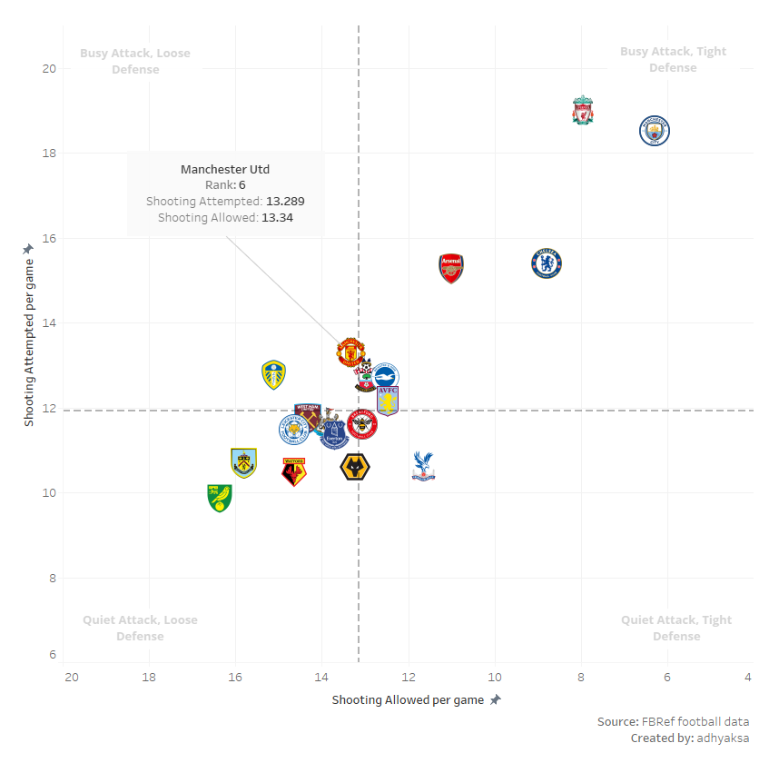
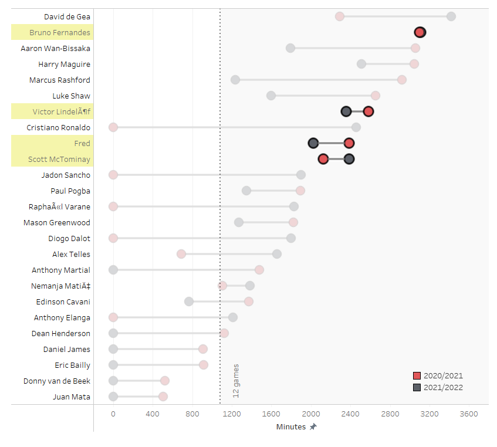
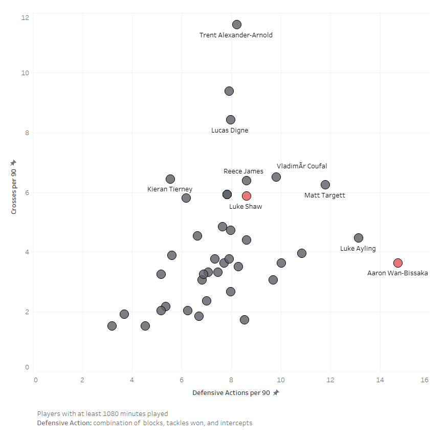
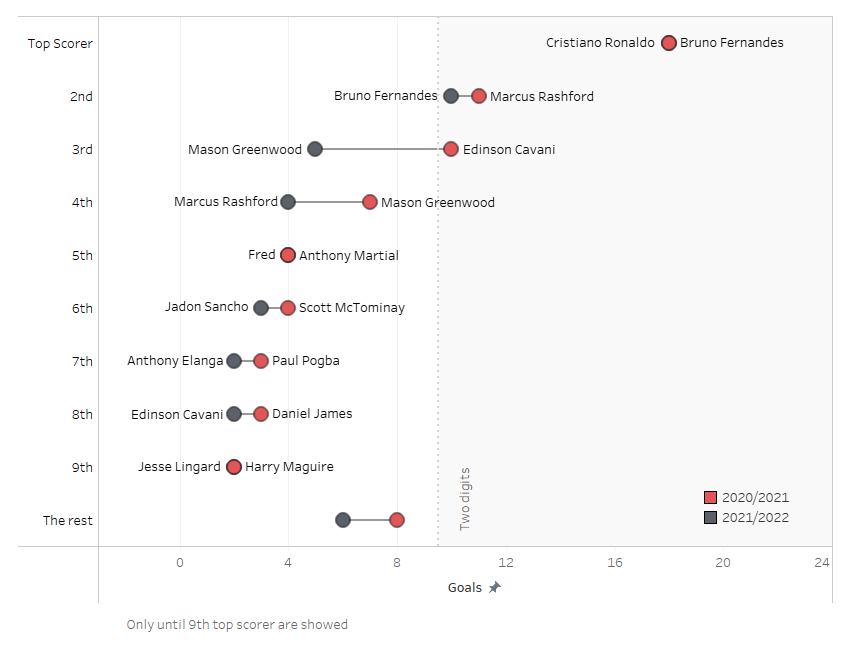
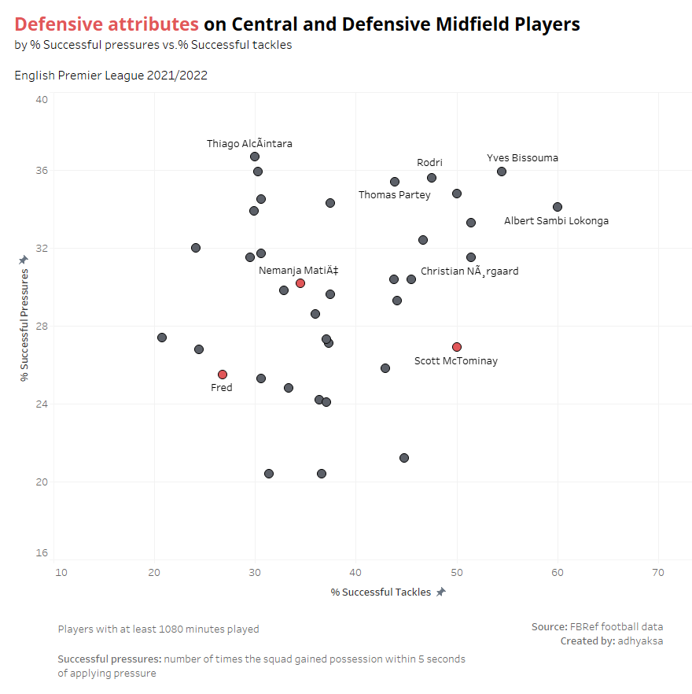
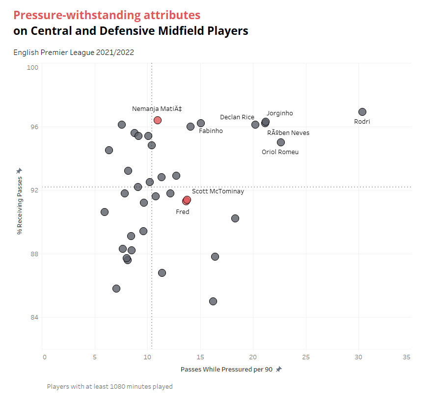
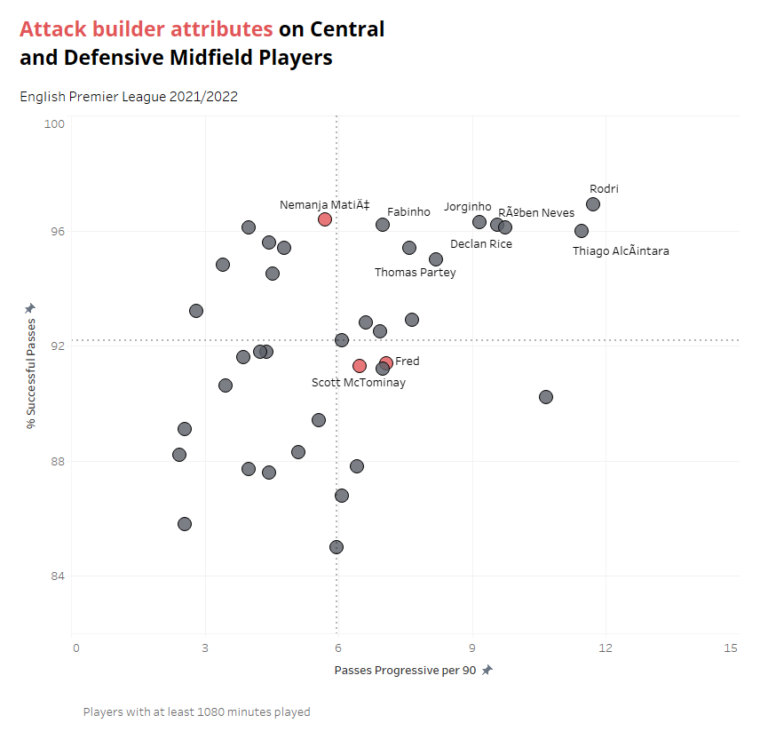
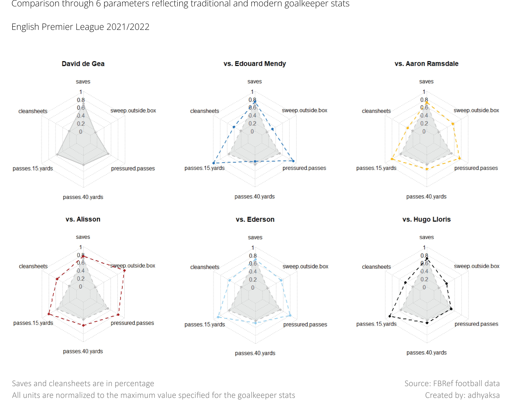
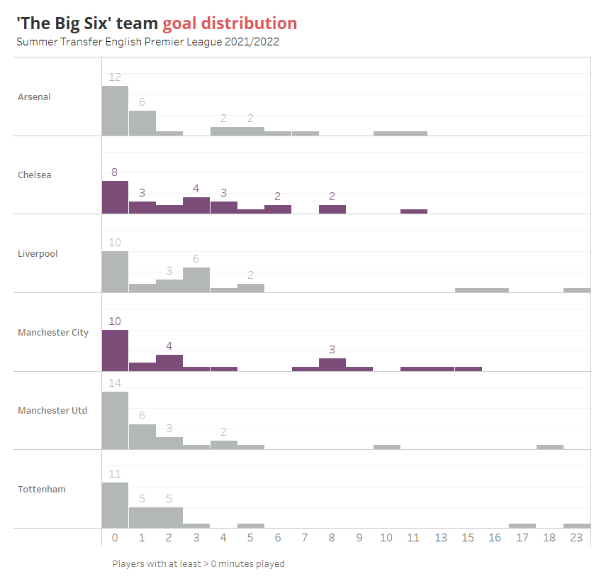
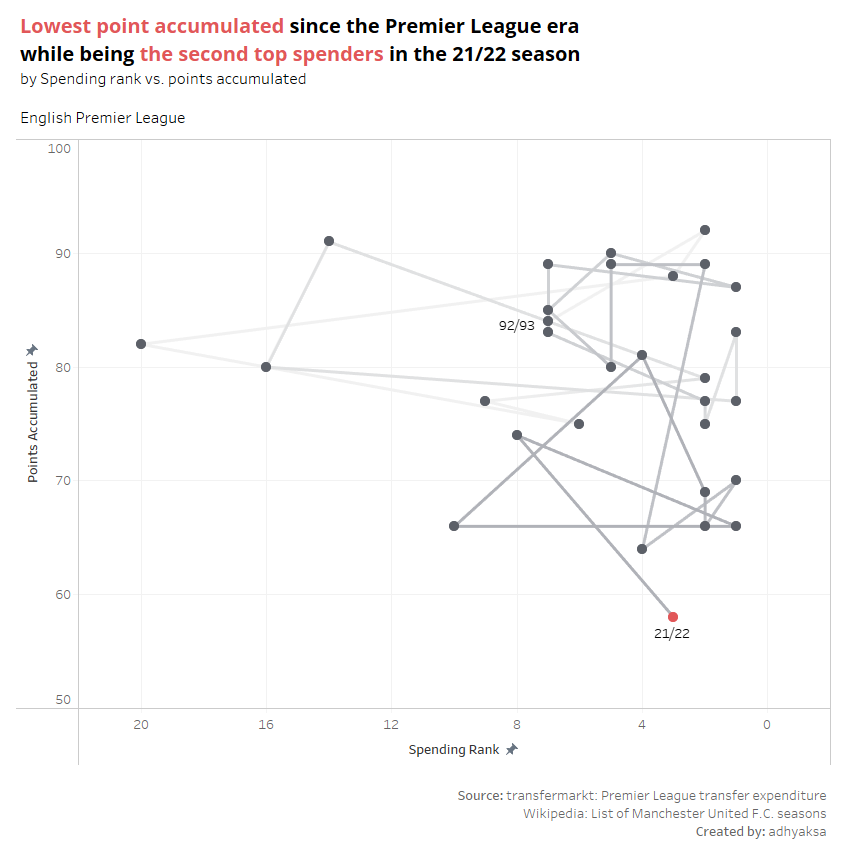

All About Manchester United Performance Last Season
Table of Content
Motivation
Manchester United has experienced their worst performance, where they only managed to collect 58 points (16 wins, 10 draws, and 12 losses) by the end of the 2021/2022 season—the lowest number of points accumulated by the club since the establishment of the Premier League format in 1992. This is in stark contrast to the previous season, where they could finish second and collect 73 points (21 wins, 11 draws, and 6 losses).
As a fan, I am curious about what was happening with the club I support. As someone equipped with SQL and data analysis comprehension, I have the urge to find those preceding through data exploration.
Approach and Tools
By leveraging football data publicly available on the FBRef website, I will explore further using primarily SQL to get insights. The data contains general to comprehensive football statistics that can cover player’s performance regardless of the position.
I utilize PostgreSQL to analyze the data, and later tableau and the ggplot2 library on R to visualize the findings.
Table summary:
| Comprehension | Technique | Tool |
|---|---|---|
| Data preparation | Create, Clean, Modify, Common Table Expression (CTE) | PostgreSQL |
| Data manipulation & exploration | Normalization, Aggregation, Unit Conversion, Ranking, Pivot Table, Window Function, Statistical Measurement | PostgreSQL |
| Data visualization | - | Tableau |
| Reporting | Markdown language | Visual Studio Code |
A few annotations:
Construction of the main table
The master table will be called frequently and take up many spaces. Therefore, to summarize the query displayed on this website, the master table formed by Common Table Expression (CTE) will be written below and called in the query block by using a corresponding comment.
--merged we undefeated
WITH pl21_22 AS
(
SELECT *
FROM "PL21_22".stats
NATURAL LEFT JOIN "PL21_22".shooting
NATURAL LEFT JOIN "PL21_22".possession
NATURAL LEFT JOIN "PL21_22".playingtime
NATURAL LEFT JOIN "PL21_22".passing_type
NATURAL LEFT JOIN "PL21_22"."passing"
NATURAL LEFT JOIN "PL21_22".misc
NATURAL LEFT JOIN "PL21_22".gca
NATURAL LEFT JOIN "PL21_22".defense
NATURAL LEFT JOIN "PL21_22".keepersadv
NATURAL LEFT JOIN "PL21_22".keepers
),
pl20_21 AS
(
SELECT *
FROM "PL20_21".stats
NATURAL LEFT JOIN "PL20_21".shooting
NATURAL LEFT JOIN "PL20_21".possession
NATURAL LEFT JOIN "PL20_21".playingtime
NATURAL LEFT JOIN "PL20_21".passing_type
NATURAL LEFT JOIN "PL20_21"."passing"
NATURAL LEFT JOIN "PL20_21".misc
NATURAL LEFT JOIN "PL20_21".gca
NATURAL LEFT JOIN "PL20_21".defense
NATURAL LEFT JOIN "PL20_21".keepersadv
NATURAL LEFT JOIN "PL20_21".keepers
),
--united we stand
master AS
(
SELECT *
FROM pl21_22
UNION ALL
SELECT *
FROM pl20_21
)
The master table is resulted from compiling scattered data source.
The Findings
United considered having a weak defensive play with mediocre attacking play
Manchester United are nowhere near City or Liverpool level during the previous season. Similar to Tottenham, United did not have decent attacking to cover their messy defense. Even though such typical performance could make Tottenham reach the Champions League, it was not reliable hence prone to losing points.
Manchester United only able to produce 13.29 shots per game, while allowing 13.34 shots. The big six team (other than United) has an average of 16.18 shots per game and allowing only 9.35 shots.
The Big Six team is England’s top-flight elite club in term of their current and historical performance. They consist of Manchester City, Manchester United, Liverpool, Tottenham, Arsenal, and Chelsea. Common characteristics of this group is to compete at least in the top 4, have a large fanbase, and immense funding power.

Among ‘The Big Six’, Only City, Liverpool, and Chelsea have more player involved in goalscoring
Show SQL Query
SELECT goals,
squad
FROM "PL21_22".stats
WHERE squad IN
(
'Manchester Utd',
'Manchester City',
'Liverpool',
'Arsenal',
'Chelsea',
'Tottenham'
)
AND minutes > 0
ORDER BY goals ASC, squad ASC
Only Bruno, Victor, Fred, and Scott McTominay who remain regular

Show SQL Query
WITH pl20_21 AS
(
SELECT player,
minutes
FROM "PL20_21".stats
WHERE squad = 'Manchester Utd'
AND minutes >= 500
),
pl21_22 AS
(
SELECT player,
minutes
FROM "PL21_22".stats
WHERE squad = 'Manchester Utd'
AND minutes >= 500
),
main_selection AS
(
SELECT pl20_21.player AS pl20_player,
pl21_22.player AS pl21_player,
pl20_21.minutes AS pl20_minutes,
pl21_22.minutes AS pl21_minutes
FROM pl20_21
FULL OUTER JOIN pl21_22
ON pl20_21.player = pl21_22.player
ORDER BY pl21_minutes DESC
)
SELECT CASE
WHEN pl20_player IS null THEN pl21_player
WHEN pl21_player IS null THEN pl20_player
ELSE pl20_player
END AS player,
pl20_minutes,
pl21_minutes
FROM main_selection
;
Wan-Bissaka was subpar in offense but stellar in defense

Show SQL Query
--SELECT stats to compare defensive player performance
SELECT n.*
FROM
(
SELECT m.*,
ntile(10) OVER (ORDER BY crosses_per90) AS ptile
FROM
(
SELECT player,
squad,
minutes,
blocks+tackles_won+intercepts AS def_action,
(blocks+tackles_won+intercepts)/(
SELECT NULLIF(AVG(played_per90), 0)
FROM pl20_21
) AS def_action_per90,
crosses AS crosses,
crosses/(
SELECT NULLIF(AVG(played_per90), 0)
FROM pl20_21
) AS crosses_per90
FROM pl20_21
WHERE minutes >= 1080
AND pos LIKE 'DF'
ORDER BY def_action_per90 DESC
) AS m
) AS n
WHERE ptile > 6
ORDER BY squad ASC,
ptile DESC
-- to explicitly filter cb from the list
;
Lack of productivity compared to the previous season

Show SQL Query
--calling master table
main_selection AS
(
SELECT player,
season,
SUM(goals) AS goals,
ROW_NUMBER() OVER (PARTITION BY season
ORDER BY SUM(goals) DESC) AS rank,
SUM(shots_on_target) AS shots_on_target,
SUM(shots) AS shots
FROM master
WHERE squad = 'Manchester Utd'
GROUP BY player,
squad,
season
)
SELECT player,
season,
goals,
shots_on_target,
shots
FROM main_selection
WHERE rank <= 9
UNION ALL
SELECT 'Other',
AVG(season)::integer,
SUM(goals),
SUM(shots_on_target),
SUM(shots)
FROM main_selection
WHERE rank > 9
AND season = 2020
UNION ALL
SELECT 'Other',
AVG(season)::integer,
SUM(goals),
SUM(shots_on_target),
SUM(shots)
FROM main_selection
WHERE rank > 9
AND season = 2021
ORDER BY season,
goals DESC,
shots_on_target DESC,
shots DESC
;
United’s Two-Third Midfielders overshadowed by league’s overall performance
Creating turbulence around the opponent
One of the abilities that are essential for a midfielder is disrupting the opponent’s ball movement. This ability is best explained by two metrics: successful pressure applied to the opponent and the number of tackles won by the player. Successful pressure is described by FBRef as the number of times the squad gained possession within five seconds of applying pressure. While tackles won is self-explanatory.

In these metrics, our players didn’t manage to complete their tasks well. Both Fred and MacTominay are below average in successfully applying pressure on the opponent. Though, McTominay is a lot better in tackling compared to Fred, with a margin of 22%.
Sustaining a pressure
Inversely, a midfielder also has to withstand pressure as sometimes they are needed to initiate a defensive-to-offensive transition. Therefore, two metrics were applied to assess this ability, including how successful they are in receiving passes and how much they pass while being pressured.

They are subpar in receiving passes but moderately better in passing while being pressured. Nevertheless, they are still below United’s standard. We need players who can maintain ball circulation alive in the midfield. An ideal example for this position is Chelsea’s Jorgi. While for a near-perfect case, there is City’s Rodri.
Attacking build-up

Again, our players fail to be among the best. Even though % of successful passes is a very tight metric, perfection is necessary. We can’t afford ineffectiveness in the mid-area as we should utilize all available chances to score a goal.
Looking at all of those plots, our players should definitely improve themselves. But wait. Hold up. Nemanja Matić is looking good at those stats, at least compared to the McFred duo. But why he didn’t get picked up more? Apparently, he has a fitness problem. He played 23 games, with only 7 full games during that season.
Show SQL Query
--SELECT stats to compare defensive player performance
SELECT m.*
FROM
(
SELECT player,
squad,
minutes,
ntile(3) OVER (PARTITION BY squad
ORDER BY passes_key) AS ptile,
--counted stats
tackles_per100,
pressures_per100,
pass_per100,
passes_under_pressure,
passes_per100,
passes_progressive,
--normalized stats
passes_under_pressure/(
SELECT NULLIF(MAX(passes_under_pressure), 0)
FROM pl21_22
)::float AS passes_under_pressure_norm,
passes_progressive/(
SELECT NULLIF(MAX(passes_progressive), 0)
FROM pl21_22
)::float AS passes_progressive_norm,
--per90 stats
passes_under_pressure/(
SELECT NULLIF(AVG(played_per90), 0)
FROM pl21_22
)::float AS passes_under_pressure_per90,
passes_progressive/(
SELECT NULLIF(AVG(played_per90), 0)
FROM pl21_22
)::float AS passes_progressive_per90
FROM pl21_22
WHERE minutes >= 1080
AND pos = 'MF') AS m
WHERE ptile < 3
AND pass_per100 >= 85.00
--an explicit command to exclude attacking midfield
--based on amount of key passes
;
The goalkeeper’s stats are undeniably inferior compared to other ‘Big Six’ keepres
Modern football is not only revolutionizing playing style and player composition. It redefines each position in every line, including goalkeeper. Nowadays, goalkeepers are required to actively participate in building attacks rather than passively stay at the box waiting for shots coming at them. They are also expected to be more involved in defending action outside the penalty area. And how well has De Gea performed so far?

De Gea could be considered descent when it’s about saving shots. However, he is overly cautious. His lack of involvement outside the penalty area and his reluctance to take shorter passes show that. He also has low scores on the “passes while being pressured” metric.
Show SQL Query
--select stats to compare defensive player performance
SELECT player, squad,
saves_per100/(
SELECT NULLIF(MAX(saves_per100), 0)
FROM pl21_22
):: float AS saves_per100,
clean_sheets_per100/(
SELECT NULLIF(MAX(clean_sheets_per100), 0)
FROM pl21_22
):: float AS clean_sheets_per100,
passes_15yds_completed/(
SELECT NULLIF(MAX(passes_15yds_completed), 0)
FROM pl21_22
WHERE pos = 'GK'
):: float AS passes_15yds_completed,
passes_40yds_completed/(
SELECT NULLIF(MAX(passes_40yds_completed), 0)
FROM pl21_22
WHERE pos = 'GK'
):: float AS passes_40yds_completed,
passes_under_pressure/(
SELECT NULLIF(MAX(passes_under_pressure), 0)
FROM pl21_22
WHERE pos = 'GK'
):: float AS passes_under_pressure,
outside_area_sweep/(
SELECT NULLIF(MAX(outside_area_sweep), 0)
FROM pl21_22
):: float AS outside_area_sweep
FROM pl21_22
WHERE minutes >= 1080
AND pos = 'GK'
AND squad IN
(
'Manchester City',
'Manchester Utd',
'Liverpool',
'Arsenal',
'Tottenham',
'Chelsea'
)
;
Insight Summary
- United’s both sides (attacking and defending) can be criticized, as they were not functional enough. However, the defensive side is more to blame.
- The primary suspect in their performance downfall was the injury storm. Nevertheless, Manchester United’s shallow squad structure did not allow it to overcome the crisis. The quality of the core squad and its backers is lopsided.
- The club’s spending is second in the league, where they only signed three players. Yet, only Ronaldo, the cheapest new signing, managed to deliver.
- On an individual basis, United’s core Midfielders and Goalkeeper performed poorly during the season.
Recommendation
- United must strengthen their squad depth. A transitional period is expected given that it depends on the club’s financial power.
- United must prioritize the purchase of defenders, after that the midfielders. Good defending allows tranquility and could save the club from losing necessary points. Possession of the midfield could convince the game, showing more control and allowing more creativity to feed the attackers.
- Taking into account that Erik Ten Hag is now coaching the team, de Gea needs to improve his playstyle “modernity” to bring the best of Ten Hag’s play scheme, considering that he adheres to progressive football and systematic possession. The manager needs a composed goalkeeper who is able to provide ball connections from below; a player who favors short passes and is brave against the opponent’s pressure.
- For the long-term, United needs to invest more in scouting to maximize the success of the new signing. An underrated and efficient signing (typically a stellar young player under the radar) would improve the club’s performance and save the club’s finances.
Manchester United’s last season performance is unbearable to watch. At least for their supporter, including me. As a long-life fan, my bar is already set high as I’ve already witnessed the glorious era of this club. Apparently, it is too high for around these periods.
The squad is in a transitional period, and they haven’t found their true shape yet. Even the manager has changed eight times since the retirement of Sir Alex, for crying out loud. Rumor has it that the management side of the club contributed to their sluggish transition. But I’m not gonna dive into the political side of it, really. I will try to find the reasoning1 behind the squad’s performance decline through FBref and other supporting data2.
Overall Performance
Before we delve into anything, let’s take a look at how the club performed last season through attempted and allowed shots.
We are nowhere near City or Liverpool level during the previous season. Similar to Tottenham, we don’t have decent attacking to cover our messy defense. Even though a performance like that could make Tottenham reach the Champions League, it made the fans uneasy throughout the game. It’s not reliable. We are prone to losing points.
Actually, the stats above has made me wonder about the characteristics of the goal distribution, at least for the “Big Six” teams. So I run a query and form a ridgeline plot based on that. It resulted in the plot below.

Apart from the above characteristics, Manchester United’s performance last season was also quite severe if we draw the line all the way to 1992 when the Premier League format was introduced.

I know it’s a little bit messy. The chart basically illustrates how complicated the journey has been lately. It compares the club’s spending rank and accumulated points for each season. But for now, let’s focus only on the red dot. It’s a record-breaking performance (not a good one) where United has the lowest points accumulation since 1992.
Huh. It’s that bad. But what happened?
Injuries and Lack of Depth
Whilst digging into the FBRef data, I found that the squad’s playing minutes vary differently from their previous season. Only four players were able to maintain their position to play regularly, including Bruno, Victor, Fred, and Scott McTominay. The rest of them was mainly sided mostly due to injury or replaced by a few new signings (and a return).
Injuries made Manchester United lose several important figures. Aaron Wan-Bissaka was the best defensive full-back in the 2020/2021 season and he only played 19.9 games, 14.1 games fewer than the previous season. He played an important defensive role for Manchester United, where he helped to prevent about 1.0 fewer crosses and 2.3 fewer passes entering the team’s penalty box while on the pitch.
Manchester United also lost Edinson Cavani because of injuries. He had to miss more than 20 games. He is a player with proven goalscoring ability and a high work ethic. Also, his shots-to-goal conversion is quite insane. Losing Cavani makes attacking option becoming less and it affects United’s goal productivity. They lose a player who can score two digits goals.
Besides Cavani, we also lost Rashford, the team’s second top scorer in the 2020/2021 season. His minutes of play were greatly reduced due to injury. And when he could play, he was not able to show his best. Rashford’s position as the main starter was replaced for 20 matches by the new signing Jadon Sancho, who was brought in from Borussia Dortmund. However, Sancho failed to at least match Rashy’s stats (20 GA) as he only scored 3 goals and assisted 3 times through his first Premier League season.
Squad depth has become one of the most important aspects of modern football. And we lack it. If a club is competing at the highest level of football, they are expected to play at least three competitions outside the main league. More games, more schedule intensity, more exposure to injury. The club needs a rotation with the same quality as the main players. Manchester City has realized it. And the results have been proven in recent years.
The cause of the injury storm is beyond my data. However, several interesting studies discuss this particular topic. This paper concludes that injury incidence would increase with age, and some type of training would expose a player to injury. Match schedule intensity and its mismatch with the rule of the game were also discussed by ESPN as the cause of an injury spike in the 2020/2021 Premier League.
The Midfield’s Two-Third
The midfield position has been regularly given to Fred and McTominay, each played around 28 games or more for the past two seasons. By getting a regular place, they had at least made a good impression on their manager at the time. But how have they embraced the assignment so far?
Creating turbulence around the opponent
One of the abilities that are essential for a midfielder is disrupting the opponent’s ball movement. This ability is best explained by two metrics: successful pressure applied to the opponent and the number of tackles won by the player. Successful pressure is described by FBRef as the number of times the squad gained possession within five seconds of applying pressure. While tackles won is self-explanatory.
In these metrics, our players didn’t manage to complete their tasks well. Both Fred and MacTominay are below average in successfully applying pressure on the opponent. Though, McTominay is a lot better in tackling compared to Fred, with a margin of 22%.
Sustaining a pressure
Inversely, a midfielder also has to withstand pressure as sometimes they are needed to initiate a defensive-to-offensive transition. Therefore, two metrics were applied to assess this ability, including how successful they are in receiving passes and how much they pass while being pressured.
They are subpar in receiving passes but moderately better in passing while being pressured. Nevertheless, they are still below United’s standard. We need players who can maintain ball circulation alive in the midfield. An ideal example for this position is Chelsea’s Jorgi. While for a near-perfect case, there is City’s Rodri.
Attacking build-up
Again, our players fail to be among the best. Even though % of successful passes is a very tight metric, perfection is necessary. We can’t afford ineffectiveness in the mid-area as we should utilize all available chances to score a goal.
Looking at all of those plots, our players should definitely improve themselves. But wait. Hold up. Nemanja Matić is looking good at those stats, at least compared to the McFred duo. But why he didn’t get picked up more? Apparently, he has a fitness problem. He played 23 games, with only 7 full games during that season.
The Goalkeeper’s Role
Modern football is not only revolutionizing playing style and player composition. It redefines each position in every line, including goalkeeper. Nowadays, goalkeepers are required to actively participate in building attacks rather than passively stay at the box waiting for shots coming at them. They are also expected to be more involved in defending action outside the penalty area. And how well has De Gea performed so far?
De Gea could be considered descent when it’s about saving shots. However, he is overly cautious. His lack of involvement outside the penalty area and his reluctance to take shorter passes show that. He also has low scores on the “passes while being pressured” metric.
Taking into account that Erik Ten Hag is now coaching the team, de Gea needs to improve his playstyle “modernity” to bring the best of Ten Hag’s play scheme, considering that he adheres to progressive football and systematic possession. The manager needs a composed goalkeeper who is able to provide ball connections from below; a player who favors short passes and is brave against the opponent’s pressure.
-
All of the SQL queries and R plots behind this post can be found here. ↩︎
-
I use FBRef data for player and club performance statistics and transfermarkt for club transfers history. ↩︎